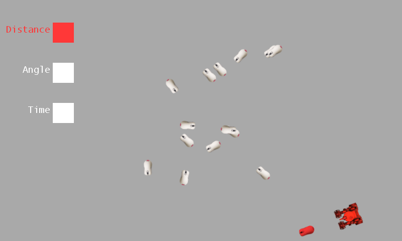

Fuzzy Logic
Ported from Microsoft's XNA 4.0 Fuzzy Logic sample.
Source for this sample on GitHub ↗

Play ▸Opens in a new tab. Select a weight with Up/Down, change it with Left/Right, or drag a bar by touch.
About this sample
A tank pursues fifteen mice while the mice wander and evade it. The tank combines fuzzy assessments of each mouse's distance, angle and time already spent chasing it to choose a target. Change the three weights to see how its choices shift. The sample also demonstrates reusable Chase, Wander and Evade behaviors.
Controls
| Action | Keyboard | Touch | Gamepad |
|---|---|---|---|
| Select a weight | Up / Down | Touch its bar | Left stick or D-pad Up / Down |
| Change a weight | Left / Right | Drag left / right | Left stick or D-pad Left / Right |
| Exit | Escape | — | Back |